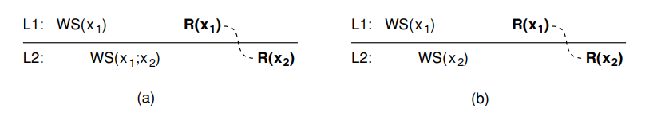
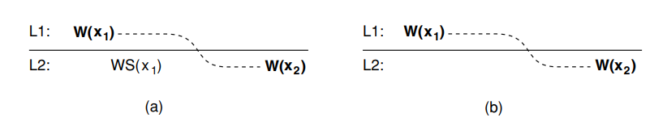
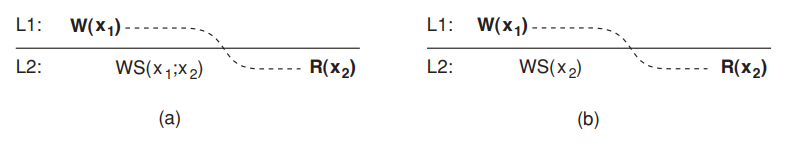
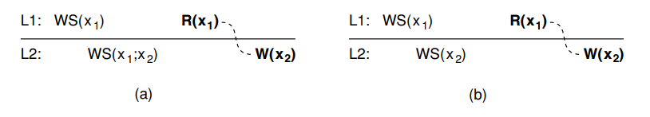

Eventual consistency
There is a special class of distributed data stores that characterized by the lack of simultaneous updates, most of the operations involve reading data. These data stores offers a very weak consistency model, called eventual consistency. Eventually consistency means in the absence of updates all replicas converge toward identical copies. Eventual consistency essentially requires only that updates are guaranteed to propagate to all replicas. It is often acceptable to propagate an update after some time, and then the question is how fast updates should be made available to read-only processes. Concurrent update are often relatively easy to solve when assuming that only a small group of processes can perform updates. Eventual consistency is therefore often cheap to implement.
Client-centric consistency models
Eventual consistent data stores work fine as long as clients always access the same replica. However, problems arise when different replicas are accessed over a short period of time. Assume the user performs several update operations and then disconnects again. Later, he accesses the database again, possibly after moving to a different location or by using a different access device. At that point, the user may be connected to a different replica than before. If the updates performed previously have not yet been propagated, the user will notice inconsistent behavior. In particular, he would expect to see all previously made changes, but instead, it appears as if nothing at all has happened.
By introducing special client-centric consistency models, the previous problem can be alleviated in a relatively cheap way. In essence, client-centric consistency provides guarantees for a single client.
To explain these models, we consider a data store that is physically distributed across multiple machines. When a process accesses the data store, it generally connects to the nearest available copy, although any copy will be possible. All read and write operations are performed on that local copy. Updates are eventually propagated to the other copies. To simplify matters, we assume that data items have an associated owner, which is the only process that is permitted to modify that item. In this way, we avoid write-write conflicts.
Notation
Let $x_i[t]$ denote the version of data item x at local copy $L_i$ at time $t$. $x_i[t]$ is the result of a series of write operations denoted as $WS(x_i[t])$ at $L_i$ that took place since initialization until time $t$. If the same operations have been replicated at local copy $L_j$ at a later time $t_2$, we write $WS(x_i[t_i];x_j[t_2])$. If the ordering of operations or the timing is clear from the context, the time index will be omitted.
Monotonic Reads
In a monotonic-read consistent data store, if a process reads the value of a data item x, any successive read operation on x by that process will always return that same value or a more recent value.
As an example where monotonic reads are useful, consider a distributed email database, when a user open mailbox in San Francisco and notice a new email is present. When the user later flies to New York and opens his mailbox again, monotonic-read consistency guarantees that the messages that were in the mailbox in San Francisco will also be in the mailbox when it is opened in New York.

In the figure (a), process $P$ first performs a read operation on $x$ at $L_1$ shown as $R(x_1)$, returning the value of $x_1$. This value results from the write operations $WS(x_1)$ performed at $L_1$. Later, $P$ performs a read operation on $x$ at $L_2$, shown as $R(x_2)$. To guarantee monotonic-read consistency, all operations in $W(x_1)$ should have been propagated to $L_2$ before the second read operation takes place. In other words, we need to know for sure that $WS(x_1)$ is part of $WS(x_2)$, which is expressed as $WS(x_1;x_2)$.
In the figure (b), shows a situation in which monotonic-read consistency is not guaranteed. After process $P$ has read $x_1$ at $L_1$. it later performs the operation $R(x_2)$ at $L_2$. However, only the write operations $WS(x_2)$ have been performed at $L_2$. No guarantees are given that this set also contains all operations contained in $WS(x_1)$.
Monotonic Writes
In a monotonic-write consistent data store, a write operation by a process on a data item $x$ is completed before any successive write operation on x by the same process. In other words, no matter where that operation was initialized, for each node the new write of same process must wait for old write propagate to local copy.

In the figure (a), a process $P$ performs a write operation on $x$ at local copy $L_1$. Later, $P$ performs another write operation on $x$, but this time at $L_2$. To ensure monotonic-write consistency, it is necessary that the previous write operation at $L_1$ has already been propagated to $L_1$. This is why we have $W(x_1)$ at $L_2$ and before $W(x_2)$.
In the figure (b), in which monotonic-write consistency is not guaranteed. What is missing is the propagation of $W(x_1)$ to copy $L_2$. By the definition of monotonic-write consistency, write operations by the same process are performed in the same order as they are initialized.
Read Your Writes
In a read-your-writes consistent data store, the effect of a write operation by a process on data item $x$ will always be seen by a successive read operation on $x$ by the same process. In other words, a write operation is always completed before a successive read operation by the same process, no matter where that read operation takes place.
Read your writes consistency is useful when updating web documents and subsequently viewing the effects.

In the figure (a), process $P$ performed a write operation $W(x_1)$ and later a read operation at a different local copy. Read-your-writes consistency guarantees that the effects of the write operation can be seen by the succeeding read operation. This is expressed by $W(x_1;x_2)$, which states that $W(x_1)$ is part of $WS(x_2)$
In the figure (b) $W(x_1)$ has been left out of $WS(x_2)$, meaning that the effects of the previous write operation by process $P$ have not been propagated to $L_2$.
Writes Follow Reads
In a writes-follow-reads consistent data store, a write operation by a process on a data item $x$ following a previous read operation on $x$ by the same process is guaranteed to take place on the same or a more recent value of $x$ that was read. In other words, any successive write opeartion by a process on a data item will be performed on a copy of $x$ that is up to date with the value most recently read by that process.
Writes-follow-reads consistency can be used to guarantee that user can only post a reaction to an article only after they have seen the original article.

In the figure (a), a process reads $x$ at local copy $L_1$ and the value is also propagates to $L_2$, where the same process later performs a write operation.
In the figure (b), no guarantees are given that the operation performed at $L_2$, because the write operation is performed on a copy that doesn’t receive the update that is on the $L_1$.
Reference
- Distributed Systems: Principles and Paradigms 2nd edition, pag.288-295